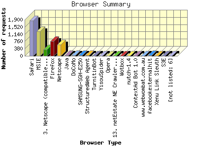

The Browser Summary identifies the most popular web browsers used to visit
this site.
Browsers are broken down by recognized categories such as
Netscape Navigator/Communicator, Microsoft Internet Explorer, WebTV, Opera
and the like. Within each category is also a subgroup by version number
such as 'MSIE 5.0' or 'Netscape 4.5'.
This report shows the first 20 results by requests for pages. This report is sorted by number of requests for pages.

| Browser Type | Number of requests | Number of page requests | |
|---|---|---|---|
| 1. | Safari | 1,838 | 334 |
| Safari/537 | 1,176 | 219 | |
| Safari/9537 | 424 | 62 | |
| Safari/534 | 145 | 25 | |
| Safari/8536 | 74 | 19 | |
| Safari/533 | 5 | 5 | |
| Safari/532 | 2 | 2 | |
| Safari/536 | 12 | 2 | |
| 2. | MSIE | 1,292 | 285 |
| MSIE/8 | 577 | 92 | |
| MSIE/9 | 379 | 52 | |
| MSIE/7 | 88 | 47 | |
| MSIE/6 | 48 | 46 | |
| MSIE/10 | 176 | 24 | |
| MSIE/5 | 4 | 4 | |
| 3. | Netscape (compatible) | 346 | 259 |
| 4. | Firefox | 758 | 256 |
| Firefox/21 | 101 | 101 | |
| Firefox/28 | 504 | 66 | |
| Firefox/22 | 24 | 24 | |
| Firefox/3 | 15 | 15 | |
| Firefox/20 | 9 | 9 | |
| Firefox/14 | 7 | 7 | |
| Firefox/29 | 35 | 7 | |
| Firefox/6 | 5 | 5 | |
| Firefox/24 | 19 | 4 | |
| Firefox/5 | 4 | 4 | |
| 5. | Netscape | 593 | 74 |
| 6. | Java | 36 | 20 |
| Java/1 | 36 | 20 | |
| 7. | DoCoMo | 15 | 15 |
| DoCoMo/2 | 15 | 15 | |
| 8. | SAMSUNG-SGH-E250 | 14 | 14 |
| SAMSUNG-SGH-E250/1 | 14 | 14 | |
| 9. | StructuredWeb Agent | 13 | 13 |
| 10. | TurnitinBot | 10 | 10 |
| TurnitinBot/3 | 10 | 10 | |
| 11. | YisouSpider | 9 | 9 |
| 12. | Opera | 7 | 7 |
| Opera/9 | 7 | 7 | |
| 13. | netEstate NE Crawler (+http: | 6 | 6 |
| netEstate NE Crawler (+http://www | 6 | 6 | |
| 14. | Wotbox | 5 | 5 |
| Wotbox/2 | 5 | 5 | |
| 15. | nutch-1.4 | 4 | 4 |
| nutch-1.4/Nutch-1 | 4 | 4 | |
| 16. | ContextAd Bot 1.0 | 3 | 3 |
| 17. | www.webwombat.com.au | 2 | 2 |
| 18. | facebookexternalhit | 14 | 1 |
| facebookexternalhit/1 | 14 | 1 | |
| 19. | Xenu Link Sleuth | 1 | 1 |
| Xenu Link Sleuth/1 | 1 | 1 | |
| 20. | S3E | 1 | 1 |
| S3E/ANDROID/ADR6400L/4 | 1 | 1 | |
| [not listed: 6] | 11 | 3 | |
This report was generated on April 30, 2014 07:07.
Report time frame April 1, 2014 03:29 to April 29, 2014 23:48.
| Web statistics report produced by: analog 6.0 / Report Magic 2.21 |